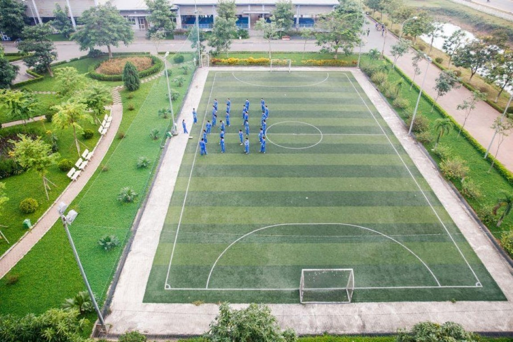
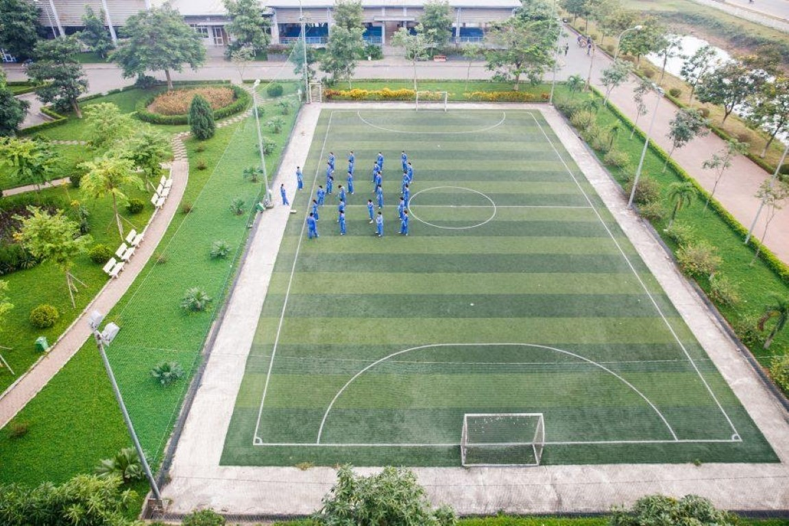

Trường Đại học FPT nằm tại Khu Giáo dục và Đào tạo – Khu Công nghệ cao Hòa Lạc – KM29 Đại lộ Thăng Long, H. Thạch Thất, TP. Hà Nội. Cách trung tâm thành phố khoảng 30km, campus ĐH FPT tại Hà Nội rộng hơn 30 ha.
Trường nằm khá xa trung tâm. Khi sinh viên theo học ở đây, để tiện cho việc di chuyển thì đa số sinh viên đều chọn ở ký túc xá hoặc ở các khu trọ gần trường. Điểm cộng cho trường là không gian với lối kiến trúc độc đáo, khuôn cảnh yên bình và xanh mát. Các tòa giảng đường và ký túc được bố trí xen kẽ với hệ thống hồ điều hòa, sân tập thể thao, vườn hoa… tạo nên một không gian xanh.
Tòa Nhà Học Đường
Trường Đại học FPT hiện nay có 4 tòa học: Alpha, Beta, Gamma và Delta. Cả 4 tòa nhà đều được thiết kế đẹp mắt và hiện đại.
Tòa nhà Alpha hay còn gọi là tòa nhà hình con rồng, là tòa nhà chính của trường nơi học tập và làm việc của toàn bộ sinh viên, giảng viên của trường. Đây là tòa nhà được thiết kế đẹp nhất trong cả bốn tòa nhà. Ngay tại sảnh tòa nhà, có lắp 1 chiếc gương lớn và là nơi check-in yêu thích của các sinh viên. Ba tòa nhà còn lại đều có thiết kế tương tự nhau.
.jpg) Các tòa nhà Alpha-Beta-Gamma-Delta ( từ trái qua phải ).
Các tòa nhà Alpha-Beta-Gamma-Delta ( từ trái qua phải ).
.png) Bên trong tòa nhà Delta (Nguồn fb: ĐH FPT Hà Nội &
https://daihoc.fpt.edu.vn).
Bên trong tòa nhà Delta (Nguồn fb: ĐH FPT Hà Nội &
https://daihoc.fpt.edu.vn).
Đường 30m
khuôn viên tổ chức các hoạt động, sự kiện, lễ hội ngoài trời cho sinh viên. Nơi đây là một trong những địa điểm diễn ra màn đồng diễn võ thuật lớn nhất Việt Nam của hơn 7000 học sinh và sinh viên Tổ chức Giáo dục FPT (FPT Edu) tại 4 thành phố Hà Nội, Đà Nẵng, TP. Hồ Chí Minh và Cần Thơ.
 (Medium).png) Con đường 30m (Nguồn fb: ĐH FPT Hà Nội &
https://daihoc.fpt.edu.vn).
Con đường 30m (Nguồn fb: ĐH FPT Hà Nội &
https://daihoc.fpt.edu.vn).
Phòng Học
Mỗi phòng học được trang bị đầy đủ thiết bị như quạt máy, điều hòa, hệ thống đèn LED âm trần, máy chiếu, TV, loa, ổ cắm điện cho laptop. Trường còn có thêm các phòng lab để dạy và học các môn lập trình chuyên sâu. Sinh viên ngành thiết kế đồ họa cũng có phòng chức năng riêng với đầy đủ thiết bị như giá vẽ, bảng vẽ, phông, máy chụp ảnh và hệ thống đèn chiếu sáng chuyên nghiệp.
 Bên trong lớp học tại tòa nhà Delta (Nguồn fb: ĐH FPT Hà Nội &
https://daihoc.fpt.edu.vn ).
Bên trong lớp học tại tòa nhà Delta (Nguồn fb: ĐH FPT Hà Nội &
https://daihoc.fpt.edu.vn ).
 Bên trong phòng lab tại tòa Alpha (Nguồn fb: ĐH FPT Hà Nội &
https://daihoc.fpt.edu.vn).
Bên trong phòng lab tại tòa Alpha (Nguồn fb: ĐH FPT Hà Nội &
https://daihoc.fpt.edu.vn).
Thư Viện
Nếu muốn học nhóm hoặc có không gian yên tĩnh, sinh viên có thể tìm đến các phòng học tự do, thư viện hoặc các khoảng thông tầng ở tòa nhà giảng đường. Ở đây, bàn ghế có thể dễ dàng di chuyển, sắp xếp theo ý muốn. Thư viện của trường có không gian khá rộng rãi. Đặc biệt, sinh viên có thể đề cử sách hay cho thư viện qua email hoặc gặp trực tiếp nhân viên thư viện, thư viện sẽ tìm và mua bổ sung sách đó.
 Bên trong thư viện tại tòa nhà Delta (Nguồn fb: ĐH FPT Hà Nội &
https://daihoc.fpt.edu.vn).
Bên trong thư viện tại tòa nhà Delta (Nguồn fb: ĐH FPT Hà Nội &
https://daihoc.fpt.edu.vn).
Little UK
Không gian học tiếng anh ở đây cũng được thiết kế vô cùng đặc biệt, mang chất Châu u đậm nét. Còn được gọi là Little UK - Không gian Anh quốc thu nhỏ ở ĐH FPT. Little UK nằm ở tầng 2 của tòa nhà Gamma - nơi 100% tất cả mọi người đều phải sử dụng tiếng Anh. Little UK là một không gian mở, kết hợp giữa việc học và chơi.
 Buổi lễ giáng sinh do Little UK tổ chức tại tòa nhà Gamma (Nguồn
fb: LITTLE UK HA NOI).
Buổi lễ giáng sinh do Little UK tổ chức tại tòa nhà Gamma (Nguồn
fb: LITTLE UK HA NOI).
Khuôn Viên
Trong khuôn viên trường có nhiều khu tổ hợp thể thao với 2 sân bóng đá, bóng rổ, sân băng, nhà tập Vovinam, phòng tập gym. Khu vực tập luyện Street Workout (một trong những sân tập với quy mô lớn nhất Đông Nam Á) là địa điểm thu hút nhiều nam sinh sáu múi. Sân băng là nơi các clb thường hay tổ chức các sự kiện, mini game và các buổi học của clb võ thuật, thể thao.
 Sân tập vovinam (Nguồn fb: LITTLE UK HA NOI).
Sân tập vovinam (Nguồn fb: LITTLE UK HA NOI).
 Sân bóng rổ (Nguồn fb: LITTLE UK HA NOI).

Sân bóng đá (Nguồn fb: LITTLE UK HA NOI).
Sân bóng rổ (Nguồn fb: LITTLE UK HA NOI).

Sân bóng đá (Nguồn fb: LITTLE UK HA NOI).
 Sân tập street workout (Nguồn fb: LITTLE UK HA NOI).
Sân tập street workout (Nguồn fb: LITTLE UK HA NOI).
Ở ĐH FPT, khung cảnh bầu trời luôn rất đẹp vì không bị che chắn bởi bất cứ tòa cao ốc nào. Cây xanh được trồng khắp khuôn viên trường. Hơn nữa, trong trường còn có khu vực đồi thông với con đường uốn lượn quanh co, lãng mạn.
 Một phần quang cảnh của đại học FPT (Nguồn fb: LITTLE UK HA
NOI).
Một phần quang cảnh của đại học FPT (Nguồn fb: LITTLE UK HA
NOI).
Nơi này đã trở thành một trong những địa điểm chụp ảnh kỷ yếu không thể bỏ qua của sinh viên ĐH FPT. Đặc biệt, MV “Tình yêu xanh lá” của ca sĩ Thịnh Suy cũng được quay ở campus ĐH FPT Hà Nội.
Đăng bởi Ngọc Đức
tham khảo thông tin từ
ĐH FPT.